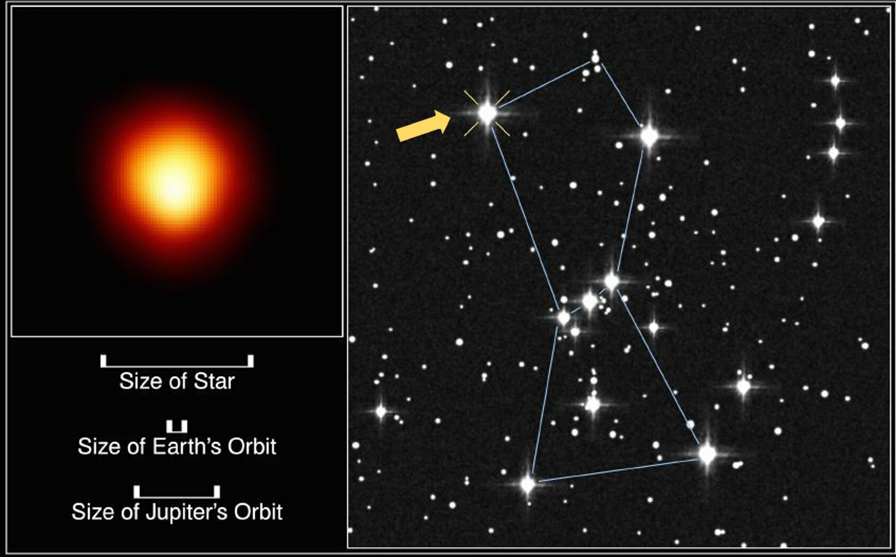

IMAGE: Betelgeuse | IMAGE CREDIT: Andrea Dupree (Harvard-Smithsonian CfA), Ronald Gilliland (STScI), NASA and ESA
Dusty's Log Entry:
- Type: post-main sequence giant
- Temperature: about 3,000-5,000 K
- Mass: about 0.5 - 8 Suns
- Lifespan: a billion years in this stage
- What's Next: AGB Star
Red giants occur when a main-sequence star runs out of hydrogen in its core. This core will shrink and the outer layers will expand. As such, the star has swelled to tens or hundreds of times it's old size. The Sun is a yellow dwarf star which will become a red giant at the end of its lifespan in 5 billion years. This new large giant will be big enough to swallow Mercury and Venus. While also drying the Earth completely up, ending all life. Red Giants are easy to spot within the night sky, appearing as several bright lights.
Example of the red giant includes Betelgeuse.